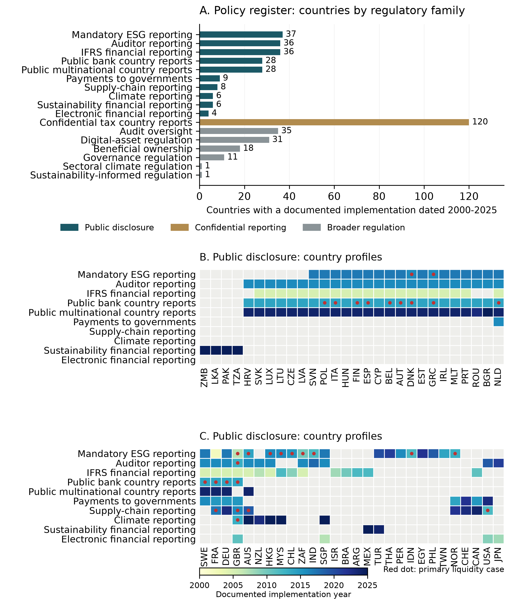
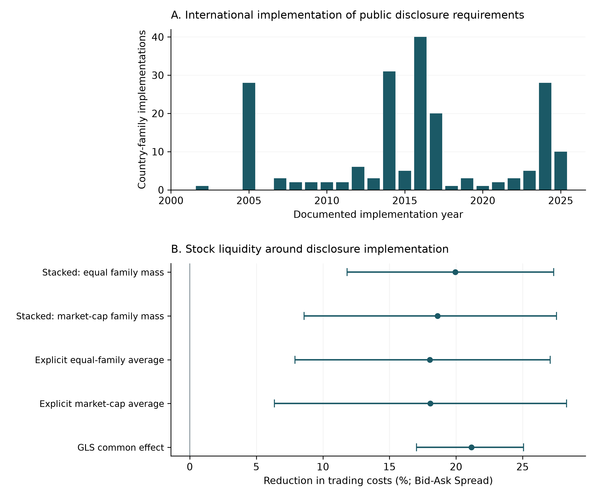
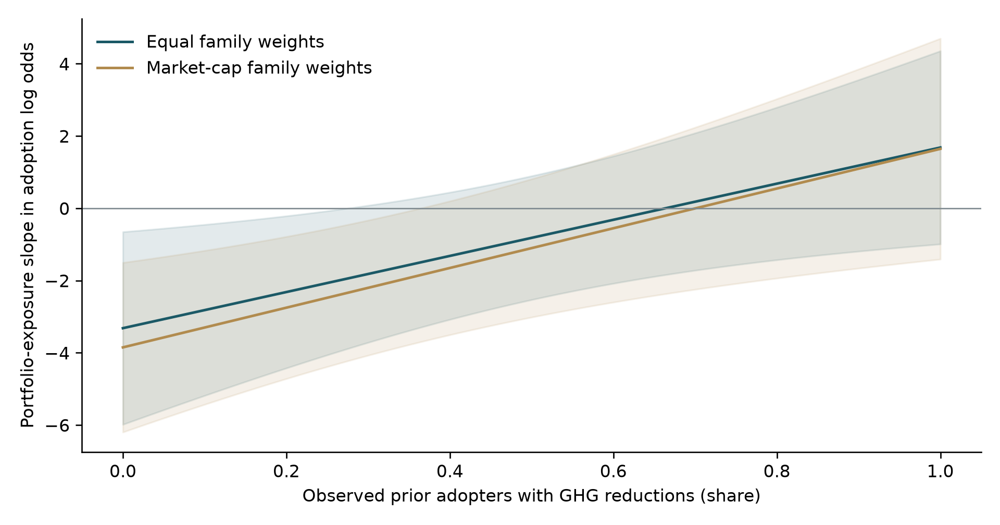

Disclosure regulation and policy diffusion
Do reporting requirements improve trading conditions? How do they spread internationally?
Sample and datasets

The policy register covers 17 regulatory families. The country panels show ten public-disclosure families across 56 countries, grouped by similar policy profiles. Red dots mark the primary liquidity implementations.
| Dataset / sample | Coverage |
|---|---|
| Policy corpus | Ten identified public-disclosure families; 198 documented country–family implementations dated 2000–2025. Official laws, standards and implementation sources. |
| Market data | Licensed Datastream, 2000–2025: 90 jurisdictions and 1,055,142 stock-year observations. |
| Primary liquidity sample | Five public families; 30 country–family implementations; 14 family–cohorts; 46 countries including comparisons; 1,002 country–stack–years. |
| Liquidity comparison | Same pre-selected companies over three pre-reform years and years 1–3 after implementation. Documented later adopters supply comparison countries. |
| Diffusion data | Official policy histories, IMF portfolio assets, observed Datastream liquidity changes, UNFCCC emissions, geographic and language networks, country controls and cross-listing aggregates. Each regression reports its actual supported sample. |
| Weights | GDP within country comparisons. Both equal-family and market-cap pooling are retained; GLS is a separate covariance-weighted common-effect estimate. |
1. Liquidity

Stock liquidity improves around disclosure implementation. The two stacked estimates correspond to trading-cost reductions of approximately 20.0% and 18.6%, measured using Bid-Ask Spread. All five models use the same supported sample. The figure combines the implementation timeline and liquidity estimates.
| Pooling | Log Bid-Ask Spread (SE) | Trading-cost reduction | Unadjusted p | Grid-adjusted p |
|---|---|---|---|---|
| Stacked, equal family mass | -0.223*** (0.048) | 20.0% | <.001 | 0.149 |
| Stacked, market-cap family mass | -0.206*** (0.058) | 18.6% | <.001 | 1.000 |
| Explicit equal-family average | -0.199*** (0.058) | 18.0% | 0.001 | 1.000 |
| Explicit market-cap family average | -0.199*** (0.066) | 18.1% | 0.004 | 1.000 |
| GLS common effect | -0.238*** (0.025) | 21.2% | <.001 | <.001 |
Table 3 in the paper retains all five models. Country-control specifications are in Online Appendix Table A2. The other liquidity outcomes, timing tests, cross sections and support restrictions are reported alongside their exact samples.
Model assumptions and support
Equal family mass is a regression objective weight; the stacked slope also reflects residual treatment variation. Explicit family averages apply their weights directly to family coefficients. GLS uses the shared-country covariance and assigns 59.6% to climate disclosure in this benchmark. Two supported families have one adopting country. Pre-reform lead tests, intervals and the complete specification matrix are available below.
2. Policy diffusion

We distinguish contact with prior adopters from learning about their outcomes, copying larger economies, trade competition and external finance. The learning regressions include foreign exposure, the observed success share and their interaction.
Diffusion Mechanism 1 - Learning from observed outcomes
We examine three signals: foreign liquidity improvements, emissions reductions and economic growth. The table reports the liquidity and emissions interactions; the paper also reports growth learning and domestic-capacity comparisons.
| Learning interaction | Equal family weights | Market-cap family weights | Risk-year observations / countries | Matrix-adjusted p |
|---|---|---|---|---|
| Exposure × foreign liquidity success | 1.835 (1.247) p=0.159 | 2.616* (1.446) p=0.088 | 141 / 18 | 1.000 |
| Exposure × foreign emissions reduction | 2.140** (0.830) p=0.020 | 2.351*** (0.787) p=0.008 | 138 / 18 | 1.000 |
The environmental interaction is positive under both weights: foreign portfolio exposure has a more positive association with implementation when more prior adopters report emissions reductions. The coefficients are changes in adoption log odds, not percentage-point changes in adoption probability. Table 4 reports all primitive terms, controls and sample counts; Table 5 adds within-country comparisons with family-specific international waves.
Diffusion Mechanism 2 - Copying larger or related economies
We test prior implementation by a fixed larger economy and by countries sharing a language. The estimates show no stable positive pattern of following these peers. Official sources also document how international reporting templates become available.
Diffusion Mechanism 3 - Competition with economic rivals
Competitors share similar export destinations. With coordinated implementations included, the adoption coefficients are -1.292 and -1.834; within-country estimates are near zero. The policy setting matters for interpreting competitive responses.
Diffusion Mechanism 4 - External pressure and financial dependence
We use prior aid, IMF credit and SDR allocations relative to GDP. The within-country coefficients are -0.002 and -0.067. They provide no positive association between measured financial dependence and implementation. The policy register separately identifies coordinated legal obligations.
Additional channel - Cross-listing and foreign-reporting familiarity
We use the prior share of sampled firms listed abroad. Coefficients of 0.0002 and 0.0022 show little association with national implementation across 25 countries and nine public-disclosure families.
All diffusion specifications, supported fits and estimation outcomes ↗ · Koning and Shipan–Volden methods and adaptation
Paper and tables
Paper ↗Online Appendix ↗Extended Appendix ↗LaTeX source ↗Results and code ↗
27 pages in the main paper, six main tables and two main figures. The Online Appendix contains eleven tables, including 31 variable definitions. The complete documents contain fifteen tables with regression estimates. Coefficients and standard errors use consistent formatting; every table has a self-contained description.
Table descriptions
Sample, datasets and primary liquidity outcomes
This table reports the market-data inventory, the primary estimation sample and outcome distributions. Panel A distinguishes the 2000–2025 Datastream inventory from the fixed-company stacked sample. Panel B reports country means for 1,002 country–stack–years across 46 countries, 14 family–cohorts and five public-disclosure families. Log Bid-Ask Spread and log price impact are natural logarithms; zero-return share is a fraction; the index averages three outcomes standardized on complete 2000 company observations. Means across repeated policy stacks are not unique-company summary statistics. Sources are Datastream and the documented policy register. No regression is estimated in this table.
Public disclosure families and pooling weights
This table reports the five families supported by the primary six-year liquidity window. Adopting-country counts identify 30 country–family implementations; countries can occur in several families and a shared supranational mandate can generate several national implementations. Cohorts group implementations occurring in the same year within a family. Every family receives 0.200 objective mass in the equal-mass stack; its effective coefficient weight additionally reflects residual treatment variation. The market-cap column reports pre-adoption sampled-company value weights for the explicit family average. GLS weights use the country-score covariance across family estimates. Each weight column sums to one. Sources are the official policy register and Datastream. No additional regression is estimated in this table.
Public disclosure and stock liquidity: five pooling models
This table reports the five primary pooled estimates around public-disclosure implementation. The dependent variable is annual mean company log Bid-Ask Spread within each country–stack–year, in natural-log units. Public disclosure × Post identifies adopting countries in years 1–3 after the recorded implementation year; the three pre-reform years are -3 to -1, and implementation year zero is omitted. Columns (1)–(2) estimate a common stacked slope with equal or pre-adoption market-cap family objective mass. Columns (3)–(4) explicitly average separate family slopes with equal or cap weights. Column (5) is covariance-weighted common-effect GLS. All columns use the same 1,002 country–stack–years, 46 countries, five families and 30 country–family implementations; GDP sets country weights. Country FE × stack and Year FE × stack are included, with separate family fits before aggregation in columns (3)–(5). Sources are Datastream and official policy documents. Country scores preserve covariance from repeated countries across stacks and families. Inference is conditional on estimated GLS weights and documented phase dates. Grid-adjusted p covers 5,184 attempted comparisons; the lead test jointly tests pre-reform event coefficients against year -1. Standard errors are in parentheses on the separate row below each coefficient. ^{***}, ^{**} and ^{*} denote two-sided significance at 1%, 5% and 10%, respectively.
Foreign exposure, observed outcomes and policy implementation
This table reports discrete-time implementation-hazard logit estimates for independent national choices. The dependent variable is First implementation, equal to one in the first documented implementation year for a country–family and zero in preceding risk years. Columns (1)–(2) use portfolio exposure alone; (3)–(4) add the observed foreign liquidity-success share and its interaction with exposure; (5)–(6) use the foreign GHG-reduction share and its interaction. Exposure is the fraction of observed positive prior-year portfolio assets in documented adopting jurisdictions, normalized within partners with known policy histories, with at least 50% history coverage. Success shares are fractions of observed eligible prior adopters; liquidity improves when fixed-company mean log Bid-Ask Spread falls, while GHG improves when reported emissions excluding LULUCF fall. Prior donors implement by t-2, with outcomes observed through t-1 and at least 80% donor-mass outcome coverage. The table reports model-specific observations, countries, families and events. Family FE, Year FE and lagged country controls are included. Continuous primitive regressors and controls are standardized on each specification sample; binary variables retain 0/1 units. Products use the standardized primitives and include all lower-order terms. Country controls are prior-year log GDP per capita, GDP growth and trade/GDP. Data are the official policy register, IMF portfolio assets, Datastream liquidity and World Bank macro series. Country-cluster sandwich errors use finite-sample corrections and t critical values with countries minus one degrees of freedom. All focal coefficients in this table have Holm-adjusted p=1.000 within the 1,024-attempt diffusion matrix. Standard errors are in parentheses on the separate row below each coefficient. ^{***}, ^{**} and ^{*} denote two-sided significance at 1%, 5% and 10%, respectively.
Within-country implementation and diffusion channels
This table reports separate weighted linear probability models for four diffusion channels. The dependent variable is First implementation, a 0/1 country–family risk-year indicator, so coefficients are probability changes per stated regressor unit. Columns (1)–(4) respectively use geographic-peer GDP-growth learning, language-peer prior adoption, aid plus IMF credit and SDR allocations relative to GDP, and the fraction of sampled firms cross-listed abroad. GDP learning is a binary comparison of adopter versus nonadopter median prior growth among geographic peers with documented histories; continuous regressors are standardized. Panels A and B use equal and pre-adoption market-cap family weights on identical observations within each channel. Model-specific sample counts are reported. Country FE × family and Family FE × year absorb persistent country–family differences and family-specific international waves; lagged income, growth and trade/GDP are included. Sources are the policy register, World Bank series, Datastream, geographic and language networks. Country-cluster sandwich errors account for absorbed-effect rank. All focal coefficients in this table have diffusion-matrix Holm-adjusted p=1.000. Standard errors are in parentheses on the separate row below each coefficient. ^{***}, ^{**} and ^{*} denote two-sided significance at 1%, 5% and 10%, respectively.
International templates and disclosure implementation
This table reports two official examples of international reporting templates and professional dissemination. The cases illustrate standard alignment and implementation infrastructure within the ten-family public-disclosure corpus. The XRB reader guide describes the relationship between New Zealand Climate Standards and TCFD; the IAASB standards publication and IFAC implementation materials document ISA 701 and international implementation activity. These institutional examples are distinct from the country-level adoption regressions. No regression is estimated in this table.
Variable definitions and data construction
This table reports definitions for all primary and secondary outcomes, treatment indicators, diffusion regressors, interactions, controls and analytical weights. Sources, units, timing, transformations, missing-data rules and alternative constructions are stated for replication. Model-specific standardizations, memberships and full coefficient matrices accompany the paper. No regression is estimated in this table.
Stock liquidity with country controls
This table reports the five pooled liquidity specifications with country controls. The dependent variable is country–stack–year mean company log Bid-Ask Spread, in log units. Columns match the five pooling methods in main Table 3; each adds prior-calendar-year log real GDP per capita, GDP growth and trade/GDP to its level regression. The control-complete sample has five families; observations and countries are reported by column. The same three pre-reform years and years 1–3 after implementation are used, with Country FE × stack and Year FE × stack. Data are official policy histories, Datastream and World Bank country series. Country-cluster score covariance preserves repeated countries across all fitted stacks; GLS errors condition on its estimated covariance weights. All five grid-wide adjusted p-values equal 1.000. Standard errors are in parentheses on the separate row below each coefficient. ^{***}, ^{**} and ^{*} denote two-sided significance at 1%, 5% and 10%, respectively.
Pooled public-disclosure estimates across liquidity measures
This table reports all four liquidity outcomes on the common primary fixed-company sample. The dependent variable is log Bid-Ask Spread in Panel A, log price impact in Panel B, zero-return share (fraction) in Panel C, and the standardized equal-weight illiquidity index in Panel D. Columns are the five main pooling methods. Each uses 1,002 country–stack–years, 46 countries, five families, GDP country weights, three pre-reform years and years 1–3 after implementation. Country FE × stack and Year FE × stack are included; no time-varying controls enter these columns. Data are Datastream and official policy documents. Country-cluster score errors preserve shared-country covariance across stacks and families; GLS weights are outcome-specific and inference is conditional on them. Adjusted p covers the 5,184-cell matrix. Standard errors are in parentheses on the separate row below each coefficient. ^{***}, ^{**} and ^{*} denote two-sided significance at 1%, 5% and 10%, respectively.
Stock-liquidity dynamics around public-disclosure implementation
This table reports event-time coefficients from the primary stacked sample. The dependent variable is country–stack–year mean log Bid-Ask Spread, in log units. Each event indicator interacts adopting-country status with the specified year relative to implementation; year -1 is the omitted reference and year zero is excluded. Columns (1)–(2) use equal or cap family objective mass. The 1,002 observations, 46 countries and five families are fixed across event times. Country FE × stack and Year FE × stack are included; GDP sets country weights. Data are Datastream and official phase histories. Country-cluster scores provide coefficient errors; the joint lead test uses the asymptotic country-cluster Wald statistic for years -3 and -2. Nonrejection of a lead test is not proof of parallel trends. Standard errors are in parentheses on the separate row below each coefficient. ^{***}, ^{**} and ^{*} denote two-sided significance at 1%, 5% and 10%, respectively.
Stock-liquidity estimates across trimming, timing and windows
This table reports stated alternative stacked liquidity specifications. The dependent variable is country–stack–year mean log Bid-Ask Spread, in log units. Columns (2)–(3) use equal or cap family objective mass; column (1) reports supported families. Each row uses the stated post-policy start and equal counts of pre and post years; companies remain fixed over that full window. Panels show no annual trimming, 1st/99th-percentile trimming and 2.5th/97.5th-percentile trimming of positive screened company annual spread/impact measures before logging. The support changes across windows; the accompanying matrix reports every row-specific country and observation count. Country FE × stack and Year FE × stack are included, without time-varying controls. Sources are official policy dates and Datastream. Country score covariance retains repeated countries; all matrix p-values and 5,184-cell Holm adjustments accompany the data. Standard errors are in parentheses on the separate row below each coefficient. ^{***}, ^{**} and ^{*} denote two-sided significance at 1%, 5% and 10%, respectively.
Portfolio exposure and learning: source coverage and timing
This table reports exposure and learning regressions under alternative portfolio-data constructions. The dependent variable is First implementation, a binary country–family risk-year outcome in a discrete-time logit. Panel A reports portfolio exposure; Panels B and C report its interaction with observed foreign liquidity success or GHG reductions, with all corresponding primitive terms retained. Rows vary position timing, fixed-2001 network weights and minimum observed policy-history coverage; columns vary family weights. Row-specific sample counts are reported; failed or insufficiently supported fits show a dash, with the reason in the model ledger. Family FE, Year FE and lagged country controls enter all fitted specifications. Continuous primitive regressors and controls are standardized on each specification sample; binary variables retain 0/1 units. Products use the standardized primitives and include all lower-order terms. Country controls are prior-year log GDP per capita, GDP growth and trade/GDP. Data are the official policy register, IMF portfolio assets, Datastream liquidity and World Bank macro series. Country-cluster sandwich errors use finite-sample corrections and t critical values with countries minus one degrees of freedom. The full 1,024-attempt focal correction is supplied with every coefficient. Standard errors are in parentheses on the separate row below each coefficient. ^{***}, ^{**} and ^{*} denote two-sided significance at 1%, 5% and 10%, respectively.
Conditional learning and domestic capacity
This table reports full triple-interaction learning specifications. The dependent variable is First implementation, in probability units in these linear probability models. Panel A combines standardized portfolio exposure P, observed foreign liquidity-success share S and domestic liquidity D; Panel B combines P, GHG-reduction share H and domestic log emissions Q. Every primitive, pairwise interaction and triple product is included. Columns use paired equal/cap family weights. Model-specific observations, countries, families and events are reported; the GHG primary sample has fewer than the required 15 countries and its unestimated coefficients are dashes. Country FE × family, Family FE × year and lagged income, growth and trade/GDP enter the fitted models. Continuous primitive regressors and controls are standardized on each specification sample; binary variables retain 0/1 units. Products use the standardized primitives and include all lower-order terms. Country controls are prior-year log GDP per capita, GDP growth and trade/GDP. Data are the official policy register, IMF portfolio assets, Datastream liquidity and World Bank macro series. Country-cluster sandwich errors use finite-sample corrections and t critical values with countries minus one degrees of freedom. Standard errors are in parentheses on the separate row below each coefficient. ^{***}, ^{**} and ^{*} denote two-sided significance at 1%, 5% and 10%, respectively.
Cross-sectional variation in secondary liquidity comparisons
This table reports treatment-by-moderator coefficients from secondary country–cohort comparisons. The dependent variable is Δ log Bid-Ask Spread, Δ log price impact or Δ zero-return share, with the Δ defined as g+1 minus g-1 on fixed company observations. Panels map to prior own illiquidity, regulatory quality, market cap/GDP, log income and trade/GDP, measured at g-1, centred and divided by the eligible-country SD within cohort. Treat and moderator main effects and cohort intercepts are included; there are no Country FE in these country-change regressions. Equal/cap columns pool the same supported family estimates using GDP country weights. Each moderator supports two public families; record counts are shown. Sources are official policy records, Datastream and World Bank series. Shared-country influence contributions produce conditional country errors; exact 108-comparison Holm adjustments accompany the supplied secondary results. Standard errors are in parentheses on the separate row below each coefficient. ^{***}, ^{**} and ^{*} denote two-sided significance at 1%, 5% and 10%, respectively.
Matched-country secondary liquidity comparisons
This table reports unmatched and matched coefficients on the secondary matching-eligible sample. The dependent variable is Δ log Bid-Ask Spread in Panel A, Δ log impact in Panel B and Δ zero-return share in Panel C, measured from g-1 to g+1 for fixed companies. Treat identifies documented adopting countries. Columns (1)–(2) use equal family weights and (3)–(4) cap family weights, with GDP country weights within family. Matching selects three nearest documented controls per adopter with replacement using pre-reform income, trade/GDP and all three liquidity levels; exact balance statistics accompany the data. Four public families are supported and country–cohort record counts are reported. Cohort intercepts enter the country-change regressions; Country FE do not. Data are policy records, Datastream and World Bank series. Country influence errors are conditional on the selected matches and aggregate repeated countries across fits; extension-wide adjusted p-values are supplied. Standard errors are in parentheses on the separate row below each coefficient. ^{***}, ^{**} and ^{*} denote two-sided significance at 1%, 5% and 10%, respectively.
Copying larger economies: recent and older implementation
This table reports discrete-time logit estimates separating recent and older implementation by a fixed larger geographic peer. The dependent variable is First implementation, a 0/1 country–family risk-year indicator. Recent means the peer implemented in t-1 and older means implementation before t-1. The peer is selected among the ten geographic neighbours using GDP in 2000, and is fixed before model estimation. Panel A uses independent national choices and Panel B includes documented coordinated implementations; paired columns use equal/cap family weights. Sample counts are reported. The independent-choice sample has only 12 countries and is unestimated under the 15-country rule. Family FE, Year FE and lagged income, growth and trade/GDP enter the fitted models. Sources are policy documents, the geographic network and World Bank GDP. Country-cluster sandwich errors and t critical values use countries minus one df; all tested cells remain in the 1,024-comparison adjustment. Standard errors are in parentheses on the separate row below each coefficient. ^{***}, ^{**} and ^{*} denote two-sided significance at 1%, 5% and 10%, respectively.
Diffusion model coverage and estimation status
This table reports the complete prespecified diffusion model ledger. It covers 16 theory-defined models, both family weights, public and combined public/confidential scopes, independent and all-documented choices, two estimators and the stated portfolio timing/coverage alternatives, yielding 688 specifications and 1,024 focal coefficient attempts. Estimates require at least 50 observations, 15 countries, ten events and ten nonevents, full rank, and positive residual and cluster variance. Family/year groups without outcome variation are iteratively excluded in the logit support calculation. Unstable or failed fits are preserved with their source samples and diagnostics; their tests enter Holm adjustment as p=1. The complete coefficient and membership files accompany the paper. No additional regression is estimated in this table.
Country--cohort comparisons across disclosure audiences and scope
This table reports secondary country–cohort change comparisons across public, combined and broader regulatory targets. The dependent variable is Δ log Bid-Ask Spread, Δ log impact or Δ zero-return share, measured from g-1 to g+1 or the mean of g+1 through g+3 as indicated. Panels differ in information audience and policy scope; supported family counts are reported in every block. Each cohort compares adopting countries with documented later adopters remaining untreated through the outcome endpoint; fixed companies and GDP country weights are used. Cohort intercepts enter the change regressions, without Country FE. Sources are policy documents, Datastream and World Bank GDP. Country influence errors preserve shared countries; reported significance uses the supplied conditional country multiplier p-values, with the full 36-cell and 12-primary comparison adjustments retained in accompanying data. These secondary samples differ from the primary six-year stacked sample. Standard errors are in parentheses on the separate row below each coefficient. ^{***}, ^{**} and ^{*} denote two-sided significance at 1%, 5% and 10%, respectively.
Public and confidential information audiences
This table reports confidential-reporting coefficients and public-minus-confidential contrasts from the secondary cohort comparisons. The dependent variable is Δ log Bid-Ask Spread, Δ log price impact or Δ zero-return share from g-1 to g+1, mapped to Panels A–C. Public reporting reaches investors directly; confidential country reports are filed with tax authorities. The contrast compares different supported families and countries. Confidential reporting uses 70 country–family–cohort records across 50 countries and one family. The combined public/confidential contrast draws on 412 records across 50 countries and nine families. Columns use equal/cap family weights with GDP country weights. Cohort intercepts enter the country-change fits; there are no Country FE. Sources are policy histories, Datastream and World Bank GDP. Country score covariance includes shared countries across audiences, with conditional country errors and the original 108-test adjustment retained in the data. Standard errors are in parentheses on the separate row below each coefficient. ^{***}, ^{**} and ^{*} denote two-sided significance at 1%, 5% and 10%, respectively.
Complete collective-liquidity specification matrix
This table reports all 5,184 attempted collective-liquidity specifications. Dimensions are three annual trimming rules, two policy/outcome lags, two symmetric pre/post window lengths, three country weights, controls with/without, three disclosure scopes, four outcomes and six pooling methods. The matrix is a correlated set of specification comparisons; counts are not independent replications. Full coefficients, conditional intervals, pre-reform tests, family weights and every failed/support decision accompany the paper. Holm adjustment includes every attempted focal comparison. No additional regression is estimated in this table.
Liquidity pooling with broader adopting-country support
This table reports adoption-support restrictions on the primary benchmark. The dependent variable is country–stack–year mean log Bid-Ask Spread, in log units. Panels require two or five adopting countries per family; rows report explicit equal/cap averages and GLS pooling. Columns omit/add lagged income, GDP growth and trade/GDP. Samples hold companies fixed for three pre-reform years and years 1–3 after implementation, using GDP country weights, Country FE × stack and Year FE × stack. Family counts are reported. Sources are Datastream, official phase dates and World Bank macro series. Shared-country scores determine conditional errors and GLS covariance. The accompanying 576-cell support matrix retains both restrictions, all outcomes, trimming rules, audiences and covariance alternatives; its joint adjusted p-values and pre-reform tests are supplied. Standard errors are in parentheses on the separate row below each coefficient. ^{***}, ^{**} and ^{*} denote two-sided significance at 1%, 5% and 10%, respectively.
Regulations and source records
Regulation records and source register · Documented policy calendar · Company source reviews
The policy register separates audience, issuer scope and implementation timing. Confidential country reports are distinct from public reports. The country-level analyses measure market exposure to documented reporting phases.